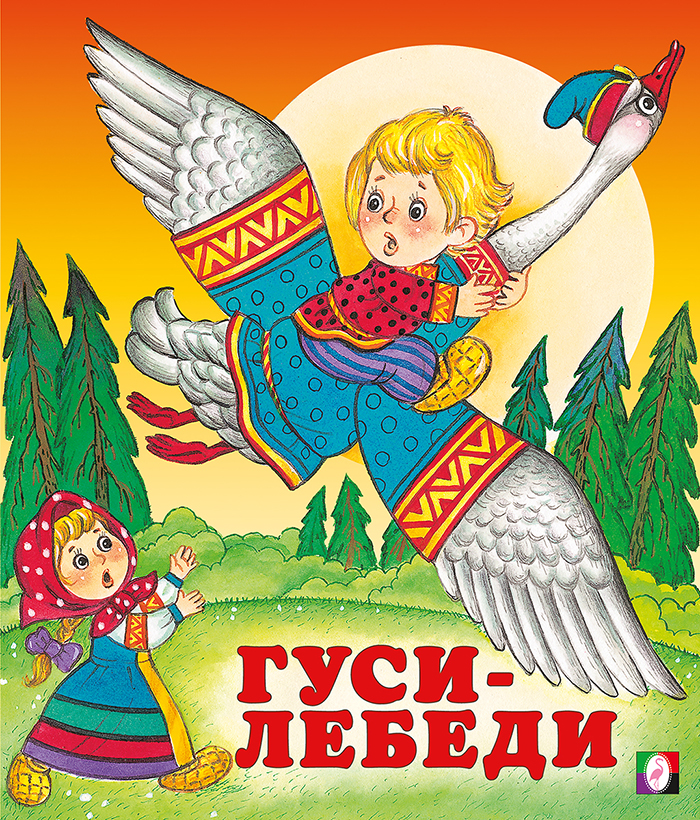

Жили-были старик со старухой. Росли у них дочка и сыночек, совсем ещё маленький.
Уходят утром старики на работу и строго-настрого наказывают дочке:
— Дочка милая, дочка любимая, со двора не ходи и за братом гляди! А мы с работы придем, платочек тебе красивый принесем и сладкую булочку.
И ушли они на работу. А девочка посадила братца на травку играться, а сама позабыла всё, о чем отец с матушкой говорили и побежала на улицу с подружками играть, забегалась, запрыгалась, да так заигралась, что про братца своего и забыла.
Летели гуси-лебеди, увидали братца, подхватили его под ручки и унесли далеко-далеко за реку, за лес, к высоким горам.
Унесли братца Гуси-лебеди
Вернулась девочка домой, смотрит – нет братца. Звала его, слезами горькими заливалась – нет братца. Увидала только далеко в небе гуси-лебеди махнули крыльями и пропали за далеким лесом. А про тех гусей давно дурная слава ходила, что крадут они детей маленьких и уносят за реку, за лес, к высоким горам. Поняла девочка тогда, что натворила, а тут плачь не плачь, а братца младшего спасать надо. Побежала девочка вдогонку. Бежала-бежала и добежала до самого конца поля родного. Смотрит – печь стоит.
Печка
— Печка, родимая, скажи, куда гуси-лебеди братца моего унесли?
— Съешь моего ржаного пирожка — скажу.
— Вот ещё чего! У нас и пшеничные-то дома не едятся!
Не сказала ей тогда ничего печка, а девочка побежала дальше и добежала до речки.
Речка
— Речка, матушка, скажи, куда гуси-лебеди братца моего унесли?
— Съешь моего простого киселька да молочка попей — скажу.
— Вот ещё чего! У нас и сливочки-то дома не едятся!
И речка тогда девочке не ответила. Побежала дальше, а там яблонька.
Яблонька
— Яблонька, красавица, скажи, куда гуси-лебеди братца моего унесли?
— Съешь моего дикого яблочка — скажу.
— Вот ещё чего! У нас и садовые-то дома не едятся!
Так бы долго девочка бегала, но попался ей навстречу зайчик, пожалел он девочку и показал ей, в какую сторону гуси-лебеди полетели. Так и добежала девочка до лесной полянки. А на полянке избушка стоит на курьих ножках, да не просто стоит, а то повернется, то покряхтит от старости, да от скуки.
Смотрит девочка, а на травке братец её сидит, с золотыми яблочками играется.
Братец играет с яблочками
Недолго думая, подхватила она братца и бегом побежала обратно к дому своему. Увидали её гуси-лебеди, гогочут, крыльями широкими машут, того и гляди догонят.
А тут стоит яблонька.
— Яблонька, красавица, спрячь нас!
— Съешь моего дикого яблочка — спрячу.
Девочка наспех сорвала яблочко, поскорее съела. Спрятала тогда их яблонька, укрыла своими ветками да листочками. Полетали гуси-лебеди — не увидели детей. Побежала девочка дальше. А гуси-лебеди увидели её — и в погоню.
Тут речка уже.
— Речка, матушка, спрячь нас!
— Съешь моего простого киселька да молочка попей — спрячу.
Девочка всё сделала, и речка укрыла её за своим бережком. Опять пролетели мимо гуси-лебеди.
Убегают
Бегут девочка с братцем дальше, а гуси-лебеди опять увидели их, вот-вот догонят.
А тут и печка.
— Печка, родимая, спрячь нас!
— Съешь моего ржаного пирожка — спрячу.
Девочка быстро схватила пирожки: один — себе, другой — братцу и поскорее залезла прямо внутрь печки.
Гуси-лебеди полетали, полетали, над печкой покружились, а делать нечего — в печку им не залезть. Так ни с чем и улетели. А девочка схватила братца и скорее домой вернулась. Тут и мама с папой пришли, платочек принесли и сладкую булочку.